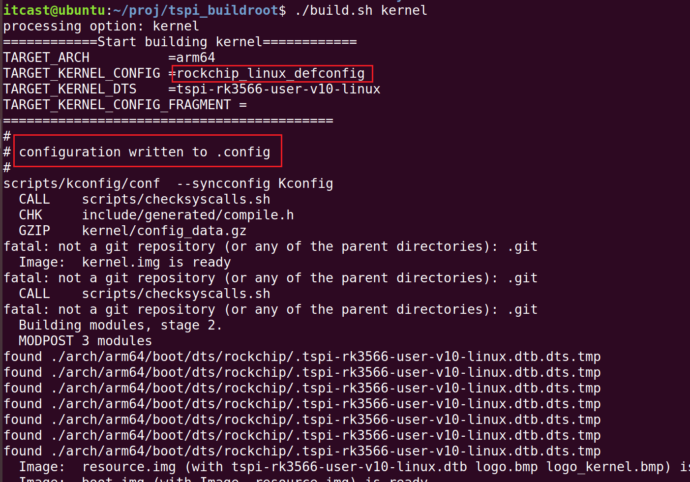

<!DOCTYPE lake>
<table class="lake-table" data-lake-id="aPvqg" id="aPvqg" margin="true" style="width: 713px"><colgroup><col width="108"/><col width="170"/><col width="435"/></colgroup><tbody><tr data-lake-id="u39cb853c" id="u39cb853c" style="height: 28px"><td data-lake-id="udd1f2aec" id="udd1f2aec"><p data-lake-id="u5c0adc9e" id="u5c0adc9e"><span class="lake-fontsize-12" data-lake-id="ub367fe24" id="ub367fe24" style="color: #000000">文件/系统</span></p></td><td data-lake-id="u612753ce" id="u612753ce"><p data-lake-id="u853e8b95" id="u853e8b95"><span class="lake-fontsize-12" data-lake-id="u0b1e8ea3" id="u0b1e8ea3" style="color: #000000">菜单角色</span></p></td><td data-lake-id="u99599bcf" id="u99599bcf"><p data-lake-id="u4b5c6d4b" id="u4b5c6d4b"><span class="lake-fontsize-12" data-lake-id="u8aa4ccd2" id="u8aa4ccd2" style="color: #000000">说明</span></p></td></tr><tr data-lake-id="u47128473" id="u47128473" style="height: 28px"><td data-lake-id="u221494b2" id="u221494b2"><p data-lake-id="ue1e3f8c2" id="ue1e3f8c2"><span class="lake-fontsize-12" data-lake-id="u130f030d" id="u130f030d" style="color: #000000">Kconfig</span></p></td><td data-lake-id="u6ce59197" id="u6ce59197"><p data-lake-id="ud58f26d9" id="ud58f26d9"><span class="lake-fontsize-12" data-lake-id="u1f5a837a" id="u1f5a837a" style="color: #000000">🧾</span><span class="lake-fontsize-12" data-lake-id="u48a18c42" id="u48a18c42" style="color: #000000"> 餐厅的完整菜单（含所有菜品+说明+搭配规则）</span></p></td><td data-lake-id="u06189c56" id="u06189c56"><p data-lake-id="u98aa6c61" id="u98aa6c61"><span class="lake-fontsize-12" data-lake-id="uc764025d" id="uc764025d" style="color: #000000">定义了“有哪些菜可选”、“哪些菜不能同时点”、“某菜需要先点主食”等规则。它不决定你点什么，只告诉你“能点什么、怎么点”。</span></p></td></tr><tr data-lake-id="u6dd6d0ed" id="u6dd6d0ed" style="height: 28px"><td data-lake-id="ufc0917be" id="ufc0917be"><p data-lake-id="u58092b16" id="u58092b16"><span class="lake-fontsize-12" data-lake-id="uecf22394" id="uecf22394" style="color: #000000">rockchip_linux_defconfig</span></p></td><td data-lake-id="u6cc028d4" id="u6cc028d4"><p data-lake-id="ue73e1caf" id="ue73e1caf"><span class="lake-fontsize-12" data-lake-id="u5b170a50" id="u5b170a50" style="color: #000000">🍱</span><span class="lake-fontsize-12" data-lake-id="udeecaf7e" id="udeecaf7e" style="color: #000000"> 餐厅推荐套餐（官方搭配，适合 Rockchip 食客）</span></p></td><td data-lake-id="u4a8035b0" id="u4a8035b0"><p data-lake-id="u55f3031f" id="u55f3031f"><span class="lake-fontsize-12" data-lake-id="uc782bda7" id="uc782bda7" style="color: #000000">是餐厅为你这个“RK3566顾客”准备的推荐点菜方案 —— 包含串口、GPU、USB、EMMC 等“必点菜”，帮你省去一个个选的麻烦。</span></p></td></tr><tr data-lake-id="u8c6de8ce" id="u8c6de8ce" style="height: 28px"><td data-lake-id="ued00338a" id="ued00338a"><p data-lake-id="u4a4affe0" id="u4a4affe0"><span class="lake-fontsize-12" data-lake-id="u58b604d3" id="u58b604d3" style="color: #000000">.config</span></p></td><td data-lake-id="ud1388bd5" id="ud1388bd5"><p data-lake-id="u4d138baf" id="u4d138baf"><span class="lake-fontsize-12" data-lake-id="ueb3db031" id="ueb3db031" style="color: #000000">✍️</span><span class="lake-fontsize-12" data-lake-id="u44ca1d0e" id="u44ca1d0e" style="color: #000000"> 你最终签字确认的点菜单</span></p></td><td data-lake-id="u75bdf05d" id="u75bdf05d"><p data-lake-id="uc2d06a55" id="uc2d06a55"><span class="lake-fontsize-12" data-lake-id="u0be4609f" id="u0be4609f" style="color: #000000">无论你是直接用了推荐套餐，还是进 menuconfig 加了“辣”、删了“香菜”，最后生成的 .config 就是你真正要“上菜”（编译）的最终配置。</span></p></td></tr></tbody></table><h1 data-lake-id="mK2Tz" data-lake-index-type="2" id="mK2Tz"><span data-lake-id="ud2083f22" id="ud2083f22" style="color: #000000">make menuconfig</span></h1><ul list="u624a3b94"><li data-lake-id="ua6fa19f8" fid="u91ebcfd0" id="ua6fa19f8"><span class="lake-fontsize-12" data-lake-id="u4af4bfdb" id="u4af4bfdb" style="color: rgb(0,0,0)">.config 文件存在，make menuconfig 界面的默认配置也就是当前.config 文件的配置， </span></li></ul><p data-lake-id="u897f92eb" id="u897f92eb" style="text-indent: 2em"><span class="lake-fontsize-12" data-lake-id="u1a491d7a" id="u1a491d7a" style="color: rgb(0,0,0)">如果修改了图形化配置界面的设置并保存，那么</span><span class="lake-fontsize-12" data-lake-id="u8b758081" id="u8b758081" style="color: rgb(0,0,0)">.config </span><span class="lake-fontsize-12" data-lake-id="u3f3dd79a" id="u3f3dd79a" style="color: rgb(0,0,0)">文件会被更新。 </span></p><ul list="ubbdcd5c6"><li data-lake-id="ua0f45d79" fid="u5e8d1ab4" id="ua0f45d79"><span class="lake-fontsize-12" data-lake-id="u39c302cb" id="u39c302cb" style="color: rgb(0,0,0)">如果.config 文件不存在，使用命令make menuconfig 界面的默认配置会通过</span><code data-lake-id="ub7d4d7bc" id="ub7d4d7bc"><span class="lake-fontsize-12" data-lake-id="ua8fa8c8f" id="ua8fa8c8f" style="color: rgb(0,0,0)">arch/$(ARCH)/configs/defconfig</span></code><span class="lake-fontsize-12" data-lake-id="u6cad4eeb" id="u6cad4eeb" style="color: rgb(0,0,0)">得到.config配置</span></li><li data-lake-id="u88f81785" fid="u5e8d1ab4" id="u88f81785"><span class="lake-fontsize-12" data-lake-id="u54b0338f" id="u54b0338f" style="color: rgb(0,0,0)">rk3566提供了默认的配置文件</span><code data-lake-id="u6e31bce0" id="u6e31bce0"><span class="lake-fontsize-12" data-lake-id="uc0dba099" id="uc0dba099" style="color: rgb(0,0,0)">rockchip_linux_defconfig</span></code><span class="lake-fontsize-12" data-lake-id="u28008e22" id="u28008e22" style="color: rgb(0,0,0)">,可以通过</span><code data-lake-id="uef0d8bd7" id="uef0d8bd7"><span class="lake-fontsize-12" data-lake-id="ua42ff541" id="ua42ff541" style="color: rgb(0,0,0)">make rockchip_linux_defconfig</span></code><span class="lake-fontsize-12" data-lake-id="ubbfb9537" id="ubbfb9537" style="color: rgb(0,0,0)">得到.config配置</span></li></ul><h1 data-lake-id="JHgYg" data-lake-index-type="2" id="JHgYg"><strong><span data-lake-id="ua9f2d0dd" id="ua9f2d0dd" style="color: rgba(0, 0, 0, 0.9)">将</span></strong><code data-lake-id="u02de6162" id="u02de6162"><strong><span data-lake-id="ucab5a7af" id="ucab5a7af" style="color: var(--yb-md-inline-code-color)">.config</span></strong></code><strong><span data-lake-id="ua67f9738" id="ua67f9738" style="color: rgba(0, 0, 0, 0.9)">保存到</span></strong><code data-lake-id="uba7261c0" id="uba7261c0"><strong><span data-lake-id="ue449a7d1" id="ue449a7d1" style="color: var(--yb-md-inline-code-color)">rockchip_linux_defconfig</span></strong></code></h1><blockquote data-lake-id="u366bb962" id="u366bb962"><p data-lake-id="ue5f96bd8" id="ue5f96bd8"><span class="lake-fontsize-12" data-lake-id="u39f320e0" id="u39f320e0">每次编译内核,都会通过</span><code data-lake-id="u11817b92" id="u11817b92"><span class="lake-fontsize-12" data-lake-id="u7c74571c" id="u7c74571c">make rockchip_linux_defconfig</span></code><span class="lake-fontsize-12" data-lake-id="ua481aa1f" id="ua481aa1f">,覆盖配置好的</span><code data-lake-id="u292add69" id="u292add69"><span class="lake-fontsize-12" data-lake-id="uee05f7b2" id="uee05f7b2">.config</span></code></p></blockquote><p data-lake-id="u784b81d4" id="u784b81d4"></p><span class="yuque-card-unsupported">[codeblock]</span><p data-lake-id="u101b3cea" id="u101b3cea"><span class="lake-fontsize-12" data-lake-id="uda497ee4" id="uda497ee4">​</span><br/></p>